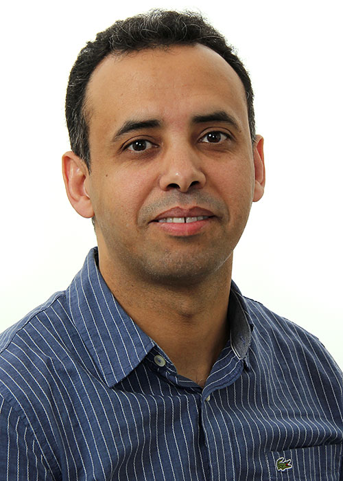

Témoignages de nos étudiants

Benoït
Co-fondateur de Dataveyes
"La pensée systémique et l'excellence opérationnelle font d'ANTSIKUS une institution unique. Cela m'a permis de donner corps à un projet, devenu aujourd'hui une entreprise reconnue internationalement.
Jean-Briac
Web Developper
"En 5 ans je suis devenu un acteur de l’évolution de mon métier. ANTSIKUS m’a permis d’imaginer les possibilités du digital. Ma passion pour la création m’a poussée à explorer de nouvelles disciplines."
Olivier
Co-fondateur de BendNote
"J’ai voulu entreprendre assez tôt dans mes études. ANTSIKUS a été un accélérateur, notamment par la formation intensif mais aussi les stages en entreprise."